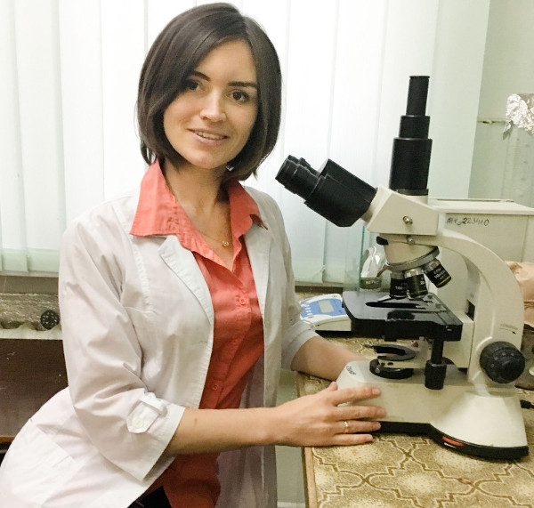

Про інформаційну платформу МІКРОБіЯ
Хто ми?
Науковці, біологи, мікробіологи, медики
Наша місія
Поширення цікавих практичних сучасних знань простою мовою, створення якісного українського контенту
Наш формат
Достовірні джерела
Ми черпаємо інформацію лише із наукових джерел, отримуємо коментарі від досвідчених фахівців
Просто
Ми уникаємо вживання наукових термінів, де можна обійтися без них
Коротко
У текстах лише найважливіше - ми поважаємо Ваш час
Практично
Ми сфокусовані на прикладних питаннях нашого повсякденного життя

"У світі існують мільйони наукових досліджень та публікацій,
а також - прості практичні питання, які цікавлять кожного.
Ми з натхненням будуємо між ними містки"
Олена Лівінська,
мікробіолог, кандидат біологічних наук, засновник проекту